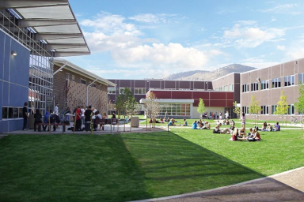

This is the webpage for Golden High School (GHS) class of 1976 (GHS '76) in Golden, Colorado.
Above: What GHS currently looks like. The buildings that existed during the GHS '76 years were removed, and an entirely new campus was created. Life goes on....
The improvements would make even a Demon (pun alert!) turn green with envy! GHS now has a "Mountain Bike Engineering class! (In our day, we didn't even have mountain bikes! =:0)"We have a Google Shared drive with resources for our class, including the definitive spreadsheet of all known classmates.
The spreadsheet drew from the 1976 Yearbook, the 1998 Golden High School Alumni Directory, the 40th reunion RSVP list on Classmates.com, and includes current information given to us by classmates (including who is deceased).
If you would like access to this spreadsheet, please send André (or one of the other contacts) an email, and we'll add your email address to the access list for this share. The spreadsheet is password protected; and the password will be given to you when access is granted.
The following (slightly edited) information was posted on Classmates.com [ https://www.classmates.com/reunions/Golden-High-School/class-of-1976/2642508 ]. A free account on Classmates.com will enable you to RSVP to the 50 year reunion tracking system on that system.
A group of us are planning a 50 year reunion on August 28 (Friday) and 29 (Saturday), 2026.
We are reaching out via this website (hosted via André's GitHub account) [ https://avanmeul.github.io/GHS76 ], Classmates.com, the GHS alumni reunion webpage [ https://www.goldenhighalumni.org/reunions ], and the GHS alumni Facebook webpage in order to gather information from our classmates and get an idea on how many would be attending this reunion. Once we have an idea of how many would be attending we can formalize the details; but we are estimating the cost per person to be around $50.00 for a dinner on Saturday night.
We will also offer some free events; for example a GHS courtyard meeting before the dinner. This will offer a tour of the new GHS campus and possibly a slide show of memories (to be held in the GHS cafeteria).
We are also looking into a (free) meet (and get reacquainted) event on Friday evening (possibly with a cash bar).
If you would be interested in attending any of the reunion events, please let Debbie Dalton (or one of the organizers) know. We are hoping for a good turnout on the big 50!
Please RSVP, even if you only plan to attend the free events, and even if you aren't planning on attending. (We'd love to hear from everyone to see how you're doing! =:0)
Once we get numbers on how many people plan to attend the reunion, we will pick a dinner venue. Regardless how many RSVP, we'll still have a dinner. It's just a matter of whether we order off a menu or get a buffet specially prepared for us.
Some of the venues currently under consideration include Golden Hotel, Table Mountain Inn, Sherpa House, Fossil Trace Golf Club, Crystal Rose (formerly SAMS) on Lookout Mountain, and others. We'll provide more information on this in the near future.
The following people are contacts for GHS '76 and are the organizers for the 50th reunion.
| contact | comment | contact method |
|---|---|---|
| Debbie Dalton | dal10dj@comcast.net | |
| Kurt Papenfus | kpapenfus30@gmail.com | |
| Mary Stewart | marystewart458@gmail.com | |
| Mary Stewart | phone | (303) 857-4150 |
| André van Meulebrouck | Roadrunner email address (most often checked) | vanmeule@roadrunner.com |
| André van Meulebrouck | Gmail email address (most reliable) | Andre.vanMeulebrouck@gmail.com |
| André van Meulebrouck | home phone (email is preferable) | (805) 499-3694 |